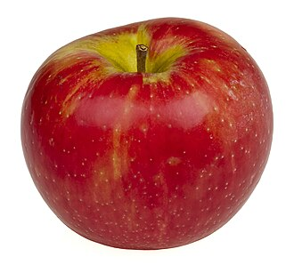

りんご（林檎）の生産量 都道府県ランキング
全14県の順位と、とれた量
りんごが日本でいちばん多くとれるのは青森県です。37万500 tで、全国（60万9,200 t）の61%を占めます。

| 順位 | 都道府県 | 収穫量 | 全国に占める割合 |
|---|---|---|---|
| 1位 | 青森県 | 37万500 t | 61% |
| 2位 | 長野県 | 10万6,400 t | 17% |
| 3位 | 岩手県 | 3万6,700 t | 6.0% |
| 4位 | 山形県 | 3万2,700 t | 5.4% |
| 5位 | 福島県 | 1万9,400 t | 3.2% |
| 6位 | 秋田県 | 1万8,600 t | 3.1% |
| 7位 | 北海道 | 6,710 t | 1.1% |
| 8位 | 群馬県 | 5,840 t | 1.0% |
| 9位 | 宮城県 | 2,340 t | 0.4% |
| 10位 | 広島県 | 1,460 t | 0.2% |
| 11位 | 岐阜県 | 1,370 t | 0.2% |
| 12位 | 富山県 | 855 t | 0.1% |
| 13位 | 石川県 | 563 t | 0.1% |
| 14位 | 山梨県 | 558 t | 0.1% |
この数字について
- 分類：バラ科
- 全国の収穫量：60万9,200 t
- この数字が表すもの：収穫量（畑や田でとれた重さ）
- 調査：作物統計調査 作況調査（果樹） 令和6年産
- 14県分を調査（調査していない県は順位に入りません）
りんごの生産量について、よくある質問
- りんごの生産量が日本一の都道府県はどこですか？
- 青森県です。作物統計調査 作況調査（果樹）（令和6年産）で37万500 tでした。
- りんごの生産量ランキング2位・3位はどこですか？
- 2位は長野県（10万6,400 t）、3位は岩手県（3万6,700 t）です。
- りんごの生産量ランキング4位・5位はどこですか？
- 4位は山形県（3万2,700 t）、5位は福島県（1万9,400 t）です。りんごの全14県の順位は上の表のとおりです。
- りんごの全国の生産量はどれくらいですか？
- 60万9,200 t（令和6年産）です。